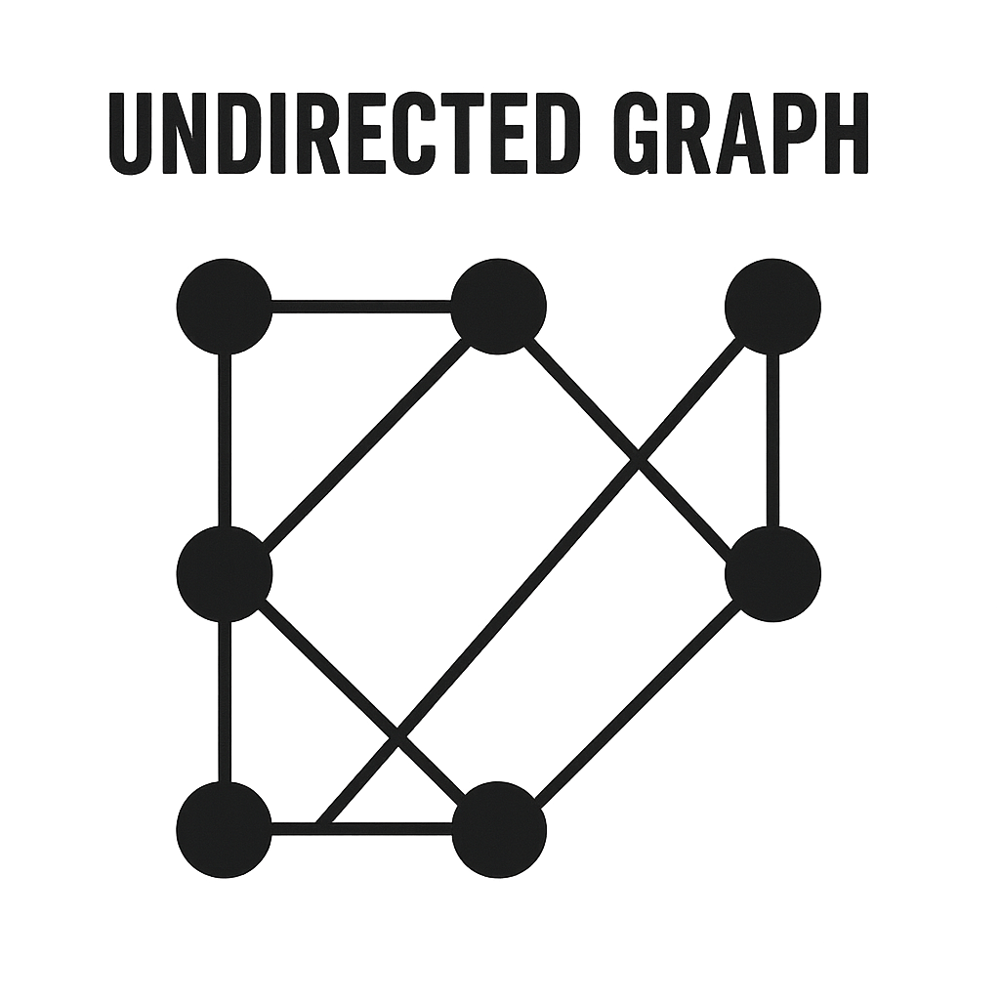

Un ciclu hamiltonian într-un graf G=(V,E) este un ciclu simplu care conține fiecare vârf din V exact o dată.
Graf Hamiltonian: ∃ un ciclu care vizitează fiecare vârf exact o dată și revine la start.
Graf Semi-Hamiltonian: ∃ un drum (nu ciclu) care vizitează fiecare vârf exact o dată.
Conceptul a fost introdus de William Rowan Hamilton în 1859 prin "Jocul Icosian", un puzzle care cerea găsirea unui ciclu pe un dodecaedru.
Pentru un graf G cu n ≥ 3 vârfuri:
Dacă δ(G) ≥ n/2 ⇒ G este hamiltonian
unde δ(G) = gradul minim al oricărui vârf.
Exemplu: În K5 (n=5):
δ(G) = 4 ≥ 2.5 ⇒ K5 este hamiltonian
Pentru un graf G cu n ≥ 3 vârfuri:
Dacă ∀ perechi de vârfuri neadiacente u și v, deg(u) + deg(v) ≥ n ⇒ G este hamiltonian
Contraexemplu:
| Tip condiție | Exemplu | Importanță |
|---|---|---|
| Suficientă | Teorema lui Dirac | Garantează existența ciclului |
| Necesară | Graf conex | Prezic absența ciclului |
Problema determinării existenței unui ciclu hamiltonian este:
def hamiltonian_cycle(graph, path, current_vertex):
# Dacă am vizitat toate vârfurile și există muchie între primul și ultimul
if len(path) == len(graph) and graph[path[0]][path[-1]] == 1:
return path + [path[0]]
for neighbor in range(len(graph)):
if graph[current_vertex][neighbor] == 1 and neighbor not in path:
new_path = hamiltonian_cycle(graph, path + [neighbor], neighbor)
if new_path:
return new_path
return None
# Exemplu de utilizare
adj_matrix = [
[0, 1, 1, 1],
[1, 0, 1, 1],
[1, 1, 0, 1],
[1, 1, 1, 0]
]
print(hamiltonian_cycle(adj_matrix, [0], 0))**Teorema lui Dirac** (1952):
- Dacă δ(G) ≥ n/2 ⇒ G este hamiltonian
- Unde δ(G) = gradul minim
**Teorema lui Ore** (1960):
- Dacă deg(u) + deg(v) ≥ n pentru orice u,v neadiacente
- ⇒ G este hamiltonian{
"type": "graf_complet",
"vârfuri": ["A", "B", "C", "D"],
"muchii": [
["A-B"], ["A-C"], ["A-D"],
["B-C"], ["B-D"],
["C-D"]
],
"hamiltonian": true,
"ciclu": "A-B-C-D-A"
}